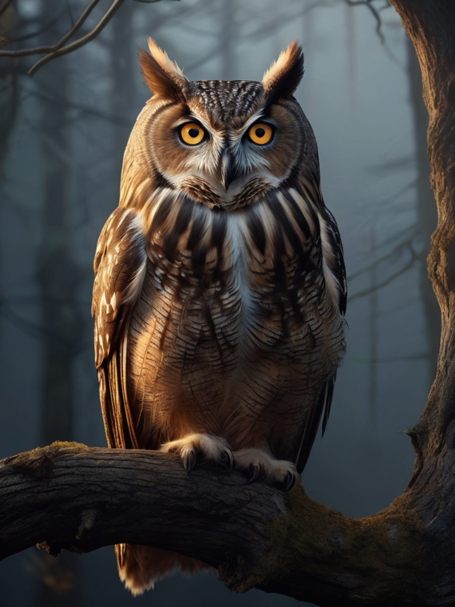

Každý chlup, peříčko i šupinka má svůj příběh
Tady nezačíná jen další portfolio. Tady začíná cesta mezi zvířaty, která mě provázejí životem. Od zvídavého Doda, přes hravé tvory v teráriu až po tiché pozorovatele na dvoře — každý z nich zanechal stopu, a já ji ukládám sem. Tahle stránka není o technice. Je o charakteru. O zvířecích osobnostech, které mi denně připomínají, že svět je plný nečekaných momentů. Prohlížej, čti, dívej se — a klidně se zastav na chvíli. Protože tahle digitální zoo není jen galerií. Je to kronika zvědavosti, trpělivosti a radosti.
